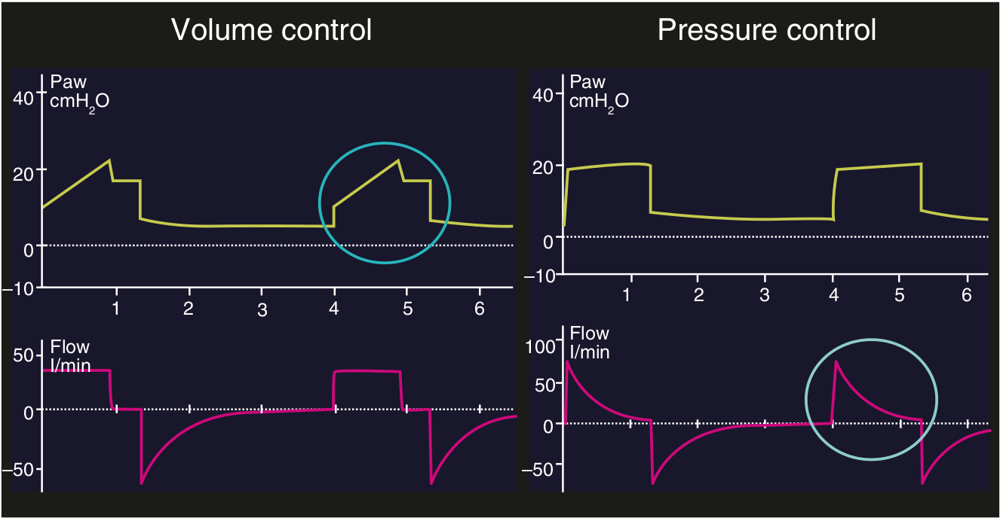

منحنی متغییر مستقل اطلاعاتی در مورد متغییر کنترل ونتیلاتور به ما میدهد. منحنی متغییر وابسته نشان دهنده پاسخ سیستم تنفسی بیمار می باشد. بنابراین برای مانیتور کردن بیمار، اطلاعات اصلی را با مشاهده منحنی متغییر وابسته بدست می آوریم.

متغییر وابسته کدام است؟
۱ - منحنی فشار در مدهای حجمی
۲ - منحنی فشار در مدهای فشاری
۳ - منحنی شدت جریان در مدهای فشاری
۴ - یک و سه
۵ - منحنی شدت جریان در مدهای حجمی